Working with Color
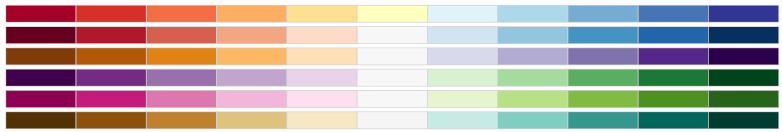
Color values are typically used in plot() functions.
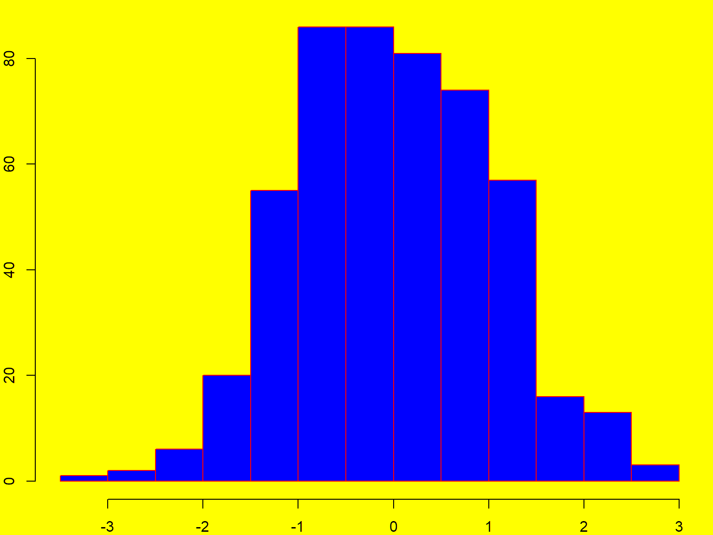
Common arguments for colors include:
col: symbol color (for polygons)
border: outline color (for a polygon)
fill: fill color (ggplot)
Color values in R can be referred to by:
palette() returns 8 commonly used color names
## [1] "black" "red" "green3" "blue" "cyan" "magenta" "yellow"
## [8] "gray"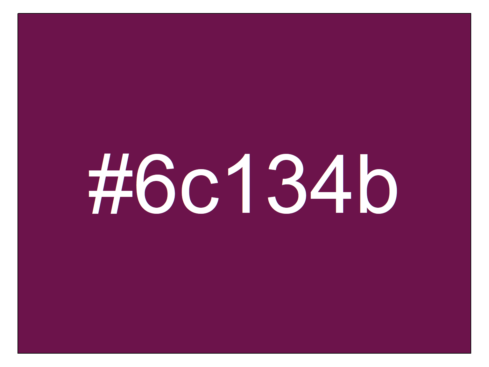
Hexadecimal values should be entered as text, including the ‘#’, e.g., “#00A949”
Several functions help you make custom colors using intuitive color models, like the red-green-blue or hue-saturation-value models. Custom color functions are generally vectorized, so if the arguments passed are vectors it will return a vector of color values of the same length.
rgb()
gray()
hsv()To make a fill, outline, or background transparent, set the color to NA.
R also supports semi-transparent colors. Look for an alpha argument in color functions, or append a 0-255 alpha value at the end of a hexidecimal code (where 0 = opaque, 255 = completely transparent).
To convert an integer to a hexadecimal code, use as.hexmode()
## [1] "c8"### Transparency Example ----------------------
# Create points for a circle
theta <- seq(from=0, to=2*pi, length.out=36)
xs <- cos(theta)
ys <- sin(theta)
# Create an empty plot
plot(NULL, xlim=c(-1,1), ylim=c(-1,1), xlab=NA, ylab=NA, asp=1)
# Plot two overlapping circles each of which is 50% transparent
blue_semitrans <- "#0000ff80"
red_semitrans <- "#ff000080"
polygon(x=xs + 0.5, y=ys, col=blue_semitrans)
polygon(x=xs - 0.5, y=ys, col=red_semitrans)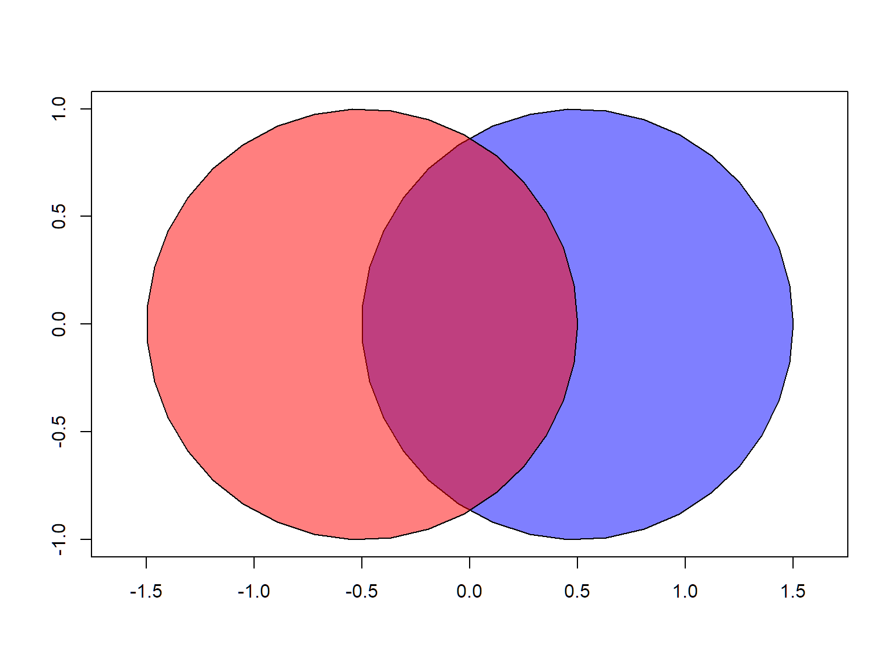
Modify the code above, using different transparency values (i.e., change the last two characters of the color values).
Not all graphic file formats preserve transparency (e.g., JPG).
If you pass one value, all objects in the plot will have the same color.
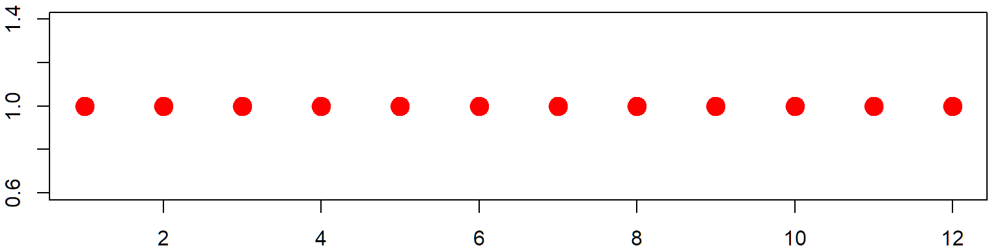
If you pass multiple color values, the colors will be repeated as needed until there is one color for each feature.
## Twelve points, three colors
plot(x=1:12, y=rep(1,12), pch=20, cex=3, xlab="", ylab="", col=c("red", "blue", "green"))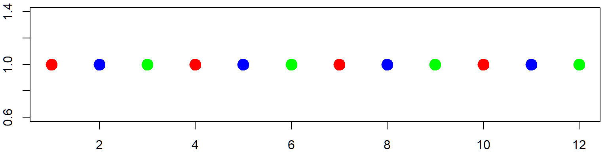
If you want each feature to have a different color, pass the same number of color values as objects in the plot.
## Twelve points, twelve colors
plot(x=1:12, y=rep(1,12), pch=20, cex=3, xlab="", ylab="", col=topo.colors(12))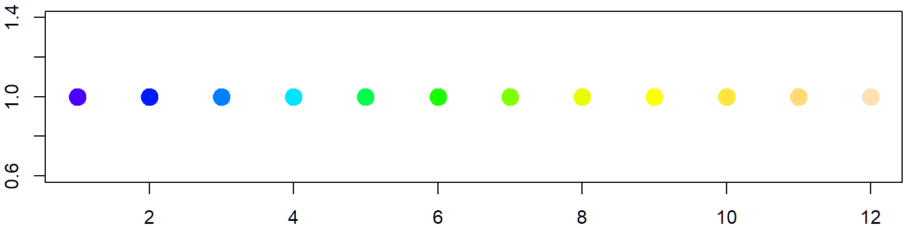
Usually, you can also pass a vector of color values, which R will use to color features separately (repeating the color values as needed). R has several built-in functions that return vectors of colors. Color palettes where there color blend into each other are known as Color Ramps.
rainbow(n)
heat.colors(n)
terrain.colors(n)
topo.colors(n) Most of these functions take a numeric argument n for the number of color values to return.
### Plot with terrain colors
par(mar=rep(0,4))
barplot(height=rep(1,20), col=terrain.colors(20), axes=FALSE, space=0)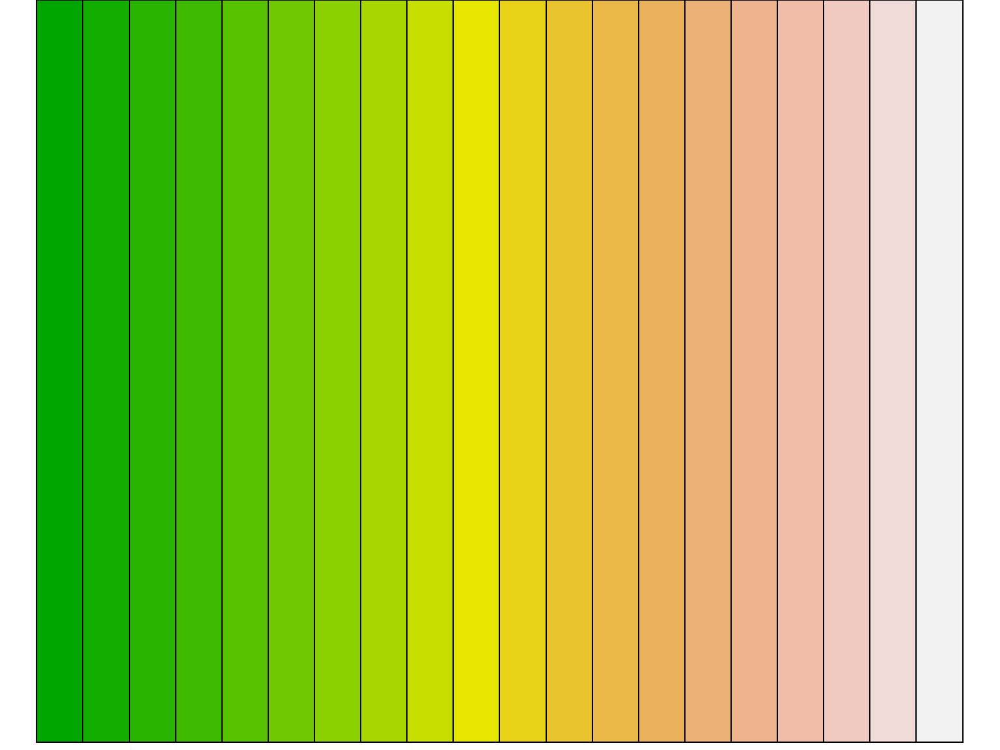
Replicate the bar plot above with a different color palette.
Create a vector of 10 gray values, from pure black to pure white.
[Solution]
For a non-repeating rainbow palette that ends at magenta, try:
rainbow(n, end=5/6)
Plot a ‘random walk’ using a color ramp, to help the viewer connect the dots.
## Create Points that Simulate a Random Walk
start <- c(0,0)
n <- 100
theta <- runif(n, min=0, max=2*pi) ## Generate 100 random angles
dist <- rnorm(n, mean=5, sd=0.5) ## Generate 100 random distances
xy <- data.frame(x = start[1] + cumsum(dist * cos(theta)),
y = start[2] + cumsum(dist * sin(theta)))
plot(xy, type="b", pch=16)
## Modify the plot using a color ramp of your choice
# plot(xy, type="b", pch=16, col=??????)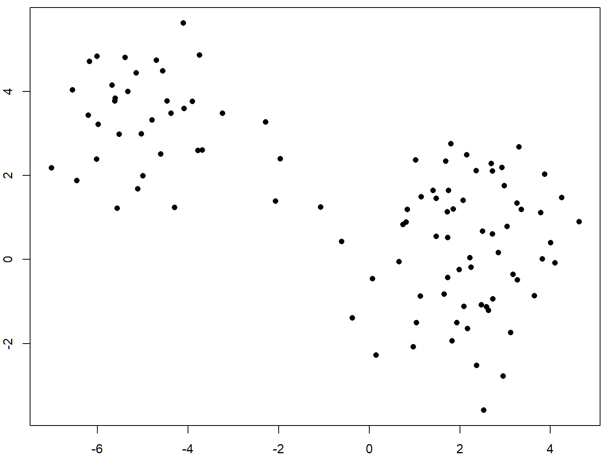
[Solution]
You can make a custom color ramp using colorRampPalette(). Something unusual about this and other color ramp functions is that it returns a function. For example,
## [1] "#FFFF00" "#FFBF00" "#FF7F00" "#FF3F00" "#FF0000"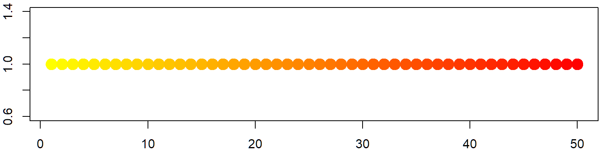
Make a color ramp of your own choice and use it to plot circles. See example below.
RColorBrewer has eight color palettes designed for categorical or qualitative data. These palettes have 8-12 colors each. For example the ‘Paired’ palette looks like:
colors_qual_paired <- RColorBrewer::brewer.pal(8, "Paired")
par(mar=rep(0,4))
barplot(height=rep(1,8), col=colors_qual_paired, axes=FALSE, space=0)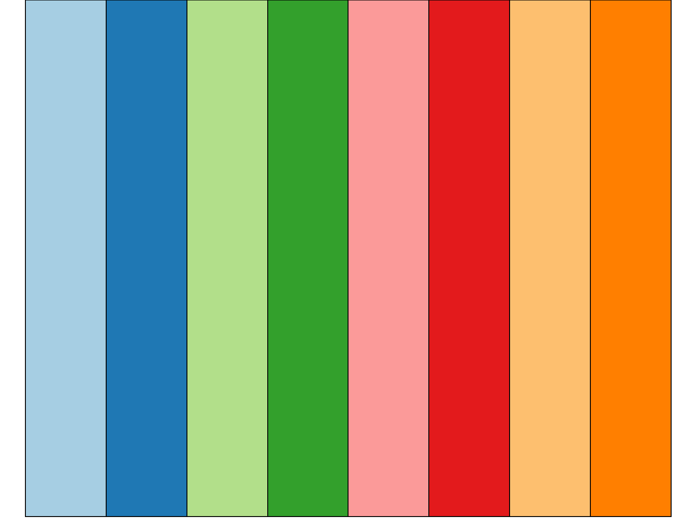
The following expression returns a vector of 433 colors excluding shades of gray. You can draw a random sample from this list with sample() to get a palette for categorical data.
You can also get more than a dozen qualitative colors using tmaptools::get_brewer_pal()
Packages that provide additional color palettes and ramps:
To view and select color palettes interactively, run:
Today we saw:
Additional Resources